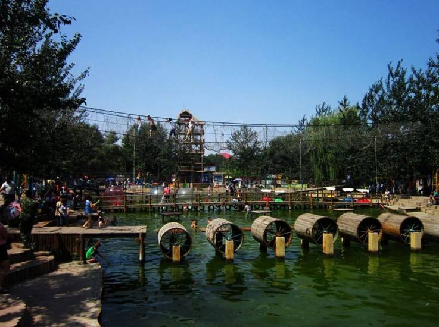

赤峰植物园以植物园为主，树木种类繁多，品种齐全。因为它的前身是赤峰红山区城郊林场树木园。树木园主要功能是引种训化北方半干旱及周边地区树木，以改变赤峰地区荒山造林品种单一的状况。自树木园建园来，先后从河北、辽宁、山西、陕西、新疆等地引进优良树种四是四科九十二属二百四十五种。 赤峰植物园一期工程完工后， 建成了门区， 树木专类区， 儿童娱乐区， 花卉观赏区，珍惜植物区，水上乐园区，森林功能区，盆景观赏区瞭望畅想区，别有洞天区等十六景区。成为赤峰地区唯一一处认识自然，学习自然，爱护自然，利用自然的理想的只旅游圣地。在一期工程的后续工程中，先后动工兴建了“忘忧园”和“水上乐园”，忘忧园主要以木质结构综合健身功能为主，其中的木制亭廊，仿古水车，成，中，少年陆地滚筒。水上浮梯等休闲项目令游人耳目一新。流连忘返。
水上乐园则以各种水上悬吊铁索健身项目为主，空中飞渡，高空铁索悬浮吊桥，水上滚筒，等无不给游人增添了新鲜刺激过瘾的新感觉。深受游人喜爱。同时许多个人投资者在植物园投资的许多大型游乐项目。如摩天环车，疯狂老鼠，UFO空中脚踏车。飞车冲浪， 豪华转马等二十余种游乐设施，均取得良好的经济效益。 植物园开业以来，曾接待过布赫等国家领导人， 接待过俄罗斯，德国。法国。日本。蒙古等政府，民间国际友人。植物园的建成也到动了相关行业发展，提供了新的就业岗位，取得了良好的生态效益，社会效益和经济效益
开放时间全天